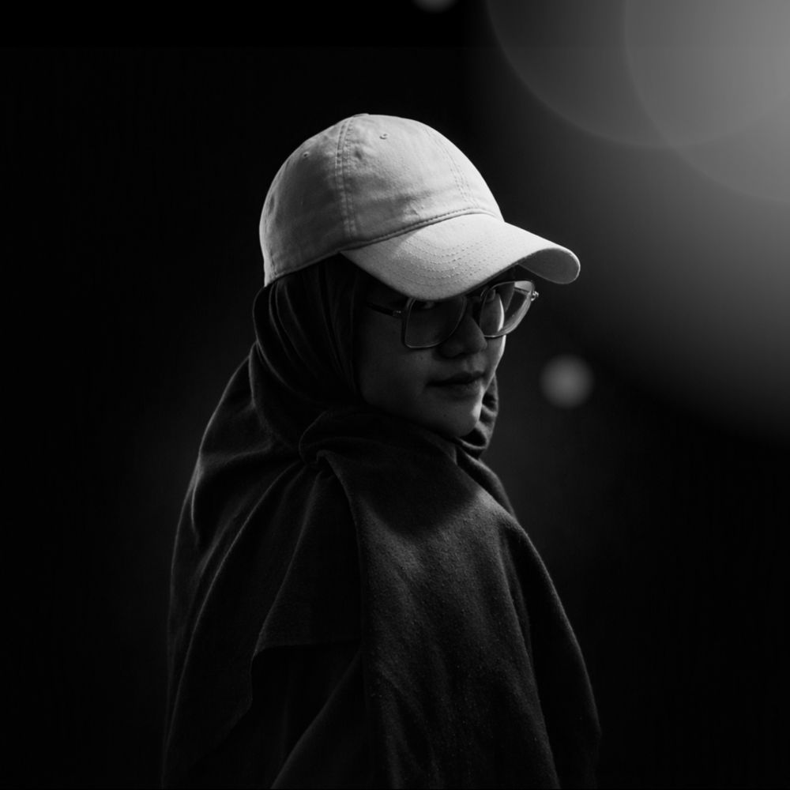

Scroll, tap, or use the arrow keys

About me
A Fine Arts Education student drawn to art photography. Dim light, texture, and everyday objects are the material I tell stories with.
Education
- B.Ed. in Fine Arts EducationUniversitas Pendidikan Indonesia, Faculty of Arts and Design Education, enrolled 2022
- SMAN 1 RancaekekSenior high school
Interests
- Art photographyMy main passion
- Textile craft, illustration, painting, and writingLong-term goal: textile craft and batik
Contact
- Emailannisanisgun27@gmail.com
- Instagram@niuukaraa_
Light and shadow
Pick a category, then tap a photo to see it larger.
Art and craft works
Textiles, crafts, and designs from 2020 to 2025. Tap a card to read its story, or the photo to enlarge it.
Writing
Besides images, I write journal articles, poems, short stories, and young adult fiction. My writing account: @Kacakata_era.
Exhibitions and training
Let's talk
For collaborations, photo shoots, or simply trading stories about art.